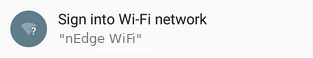

Captive Portal
nEdge can provide a captive portal for devices authentication. New devices will not able to access the rest of the network unless the authenticate successfully via the web captive portal. Devices already belonging to a nEdge user will not need to authenticate again.
The redirection to the captive portal usually happens automatically when the device first connects to the network.

Android captive portal login notification
Warning
On Windows 10 hosts with chrome browser, captive portal is only detected while connected to a WiFi network.
The captive portal basically provides a way to associate a device to a nEdge user. After the association is successful, the policies defined for the given user will be applied to the device. The access credentials for the captive portal are the ones configured in the users page. A device label is also required. Although this is a free field, the user is expected to insert a string to describe its device, e.g. Joe’s Laptop.
Upon successful authentication, the device will be redirected to the web. A customized redirection URL can be set up to redirect the devices to a specific website.

Captive portal settings
By leaving the field blank, the devices will be redirected to the original website they were trying to visit before the captive portal login.
The Device Identifier specifies how new devices authenticating to the captive portal will be added to the corresponding user. Usually it’s desirable to add the devices via their MAC address as it’s bound to a specific device. However, when the devices are connected to a router (not a simple switch, the router is their default gateway) before reaching the nEdge device, their MAC address will be hidden by the router MAC address and nEdge will always see the same MAC address, so the captive portal would be useless. In this case the IP based identification should be used, so that the IP address is used in place of the MAC. This assumes each device has it’s own fixed IP, so it won’t work properly with DHCP.
User Logout
Disconnecting a device by explicitly logging out is usually not required, however
in case a nEdge user wants to disassociate himsemf from the device, this is possible
through the http://<Captive Portal IP>:3000/lua/logout.lua page from the
browser.
Informative Captive Portal
The captive portal can also operate in informative mode. No user authentication is performed in informative mode. An informative page is just shown to newly connected users, to present them the terms and conditions of the Internet access that is being provided. Users will be able to access the Internet upon acceptance of the presented terms and conditions.
Active users will be forced to renew their acceptance of the terms and conditions every day. Inactive users will be presented with the informative page as soon as they become active and try to access the Internet again.
Selective Captive Portal
It is possible to disable the captive portal for specific devices or network segments. Check out the users documentation for more details.
Note
With this setup, since routers mask the devices MAC addresses, it’s necessary to change Device Identifier from the captive portal preferences to “IP” in order for this to work properly.
Radius Integration
nEdge can use an external RADIUS server to authenticate the captive portal users as well as GUI users. Check out the ntopng user authentication documentation for more details.
Note
When RADIUS is used for captive portal authentication, only the configured nEdge users will be able to authenticate. This constrain is necessary since a user is used to associate the device to a policy.